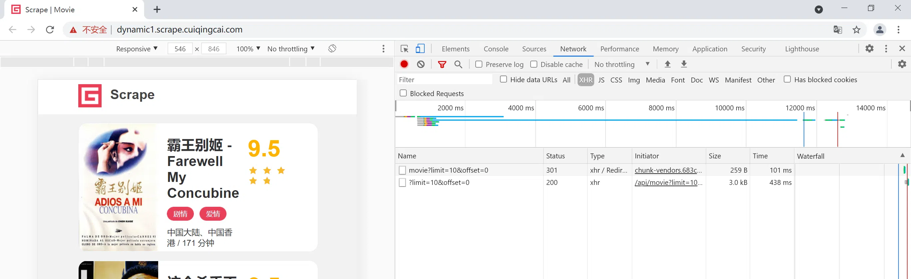
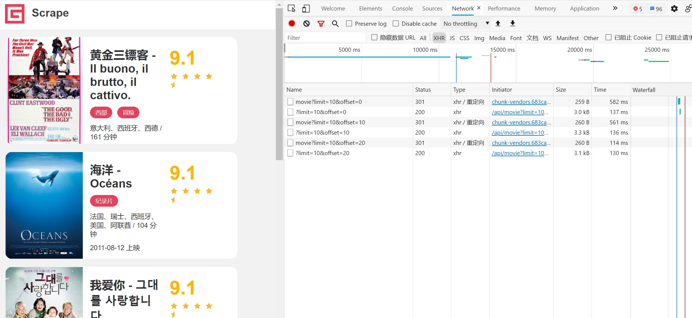
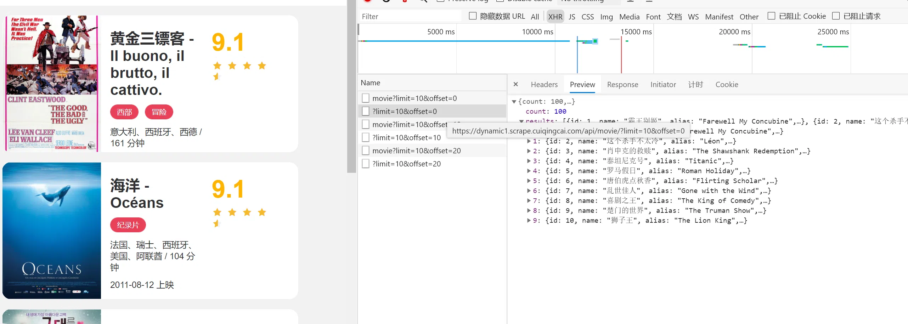
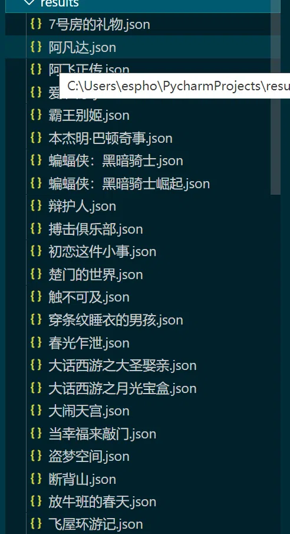

Ajax爬取案例实战
本文最后更新于：2021年6月15日 上午
准备工作
- 安装好
Python 3（最低为 3.6 版本），并能成功运行Python 3程序。 - 了解
PythonHTTP请求库requests的基本用法。 - 了解
Ajax的基础知识和分析Ajax的基本方法。
爬取目标
其链接为：https://dynamic1.scrape.cuiqingcai.com/，页面如图所示。

需要完成的目标有：
- 分析页面数据的加载逻辑。
- 用
requests实现Ajax数据的爬取。 - 将每部电影的数据保存成一个
JSON数据文件。
爬取列表页
打开浏览器开发者工具，切换到Network面板，勾选上「Preserve Log」并切换到「XHR」选项卡，如图所示。

点开第2个结果，观察到其Ajax接口请求的URL地址为：https://dynamic1.scrape.cuiqingcai.com/api/movie/?limit=10&offset=10，这里有两个参数，一个是limit，其值为10，一个是offset，它的值也是10。
切换到Preview选项卡，结果如图所示。

可以看到结果是一些JSON数据，它有一个results字段，这是一个列表，列表的每一个元素都是一个字典。观察一下字典的内容，可以看到对应的电影数据的字段了，如name、alias、cover、 categories，对比下浏览器中的真实数据，各个内容是完全一致的，而且这个数据已经非常结构化了，完全就是我们想要爬取的数据。
导入一些所需的库并定义一些配置，代码如下：
1 | |
引入了requests和logging库，并定义了logging的基本配置，接着定义INDEX_URL，这里把limit和offset预留出来变成占位符，可以动态传入参数构造成一个完整的列表页URL。
下面来实现一下列表页的爬取，先定义一个通用的爬取方法，代码如下：
1 | |
定义一个scrape_api方法，和之前不同的是，这个方法专门用来处理JSON接口，最后的response调用的是json方法，它可以解析响应的内容并将其转化成JSON字符串。
在这个基础之上，定义一个爬取列表页的方法，代码如下：
1 | |
定义了一个scrape_index方法，用来接收参数page，page代表列表页的页码。
先构造了一个URL，通过字符串的format方法，传入limit和offset的值。这里的limit直接使用了全局变量LIMIT的值，offset则是动态计算的，计算方法是页码数减1再乘以limit，比如第1页的offset值就是0，第2页的offset值就是10，以此类推。构造好URL之后，直接调用scrape_api方法并返回结果即可。
这样就完成了列表页的爬取，每次请求都会得到一页10部的电影数据。
由于这时爬取到的数据已经是JSON类型了，所以不用像之前一样去解析HTML代码来提取数据，爬到的数据就是想要的结构化数据，因此解析这一步这里就可以直接省略。
爬取详情页
这时候已经可以拿到每一页的电影数据了，但是实际上这些数据还缺少一些想要的信息，如剧情简介等，所以需要进一步进入到详情页来获取这些内容。
这时候点击任意一部电影，如《教父》，进入到其详情页面，这时候可以发现页面的URL已经变成了，页面也成功展示了详情页的信息
先定义一个详情页的爬取逻辑吧，代码如下：
1 | |
定义了一个scrape_detail方法，它接收参数id。这里的实现也非常简单，先根据定义好的DETAIL_URL加上id，构造一个真实的详情页Ajax请求的URL，然后直接调用scrape_api方法传入这个URL即可。接着，定义一个总的调用方法，将以上的方法串联调用起来，代码如下：
1 | |
定义了一个main方法，首先遍历获取页码page，然后把page当成参数传递给scrape_index方法，得到列表页的数据。接着我遍历所有列表页的结果，获取每部电影的id，然后把id当作参数传递给scrape_detail方法，来爬取每部电影的详情数据，赋值为detail_data，输出即可。
保存数据
定义一个数据保存的方法，代码如下：
1 | |
首先定义了数据保存的文件夹RESULTS_DIR，注意，先要判断这个文件夹是否存在，如果不存在则需要创建。
接着，定义了保存数据的方法save_data，首先获取数据的name字段，即电影的名称，把电影名称作为JSON文件的名称，接着构造JSON文件的路径，然后用json的dump方法将数据保存成文本格式。dump的方法设置了两个参数，一个是ensure_ascii，将其设置为False，它可以保证中文字符在文件中能以正常的中文文本呈现，而不是unicode字符；另一个是indent，它的数值为2，这代表生成的JSON数据结果有两个空格缩进，让它的格式显得更加美观。
最后，main方法再调用下save_data方法即可，实现如下：
1 | |
本地results文件夹下出现了各个电影的JSON文件，如图所示。

本博客所有文章除特别声明外，均采用 CC BY-SA 4.0 协议 ，转载请注明出处！